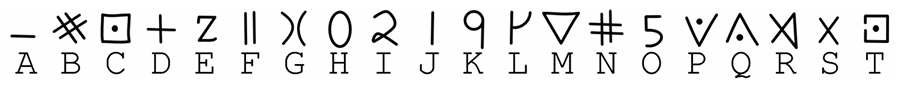
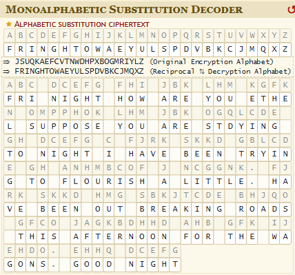
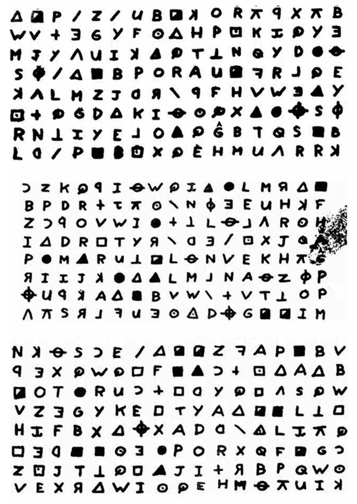

Decipherment
Day 3: How Ciphers Help with Decipherment
Last Time
Review
- What is decryption?
- Cryptogram
- Types of cryptograms:
- Codes
- Ciphers
- Caesar
- Homophonic
- Simple Substitution (Aristocrat)
Substitution Ciphers
Mapping is arbitrary nearly all of the time when using non-Roman characters
When spacing is preserved, these are called aristocrats
Aristocrats
Decoders can create a simple (temporary) substitution table:
Aristocrats
Allowing us to create a message that looks like:
ABC DCEFG FHI JBK LHM KGFKN OMPPHOK LHM JBK OGQLCDE GH DCEFG C FJRK SKKD GBLCDE GH ANHMBCOF J NCGGNK. FJRK SKKD HMG SBKJTCDE BHJQO GFCO JAGKBDHHD AHB GFK IJEHDO. EHHQ DCEFG
Aristocrats
From there, we can perform a frequency analysis.
Can we make any guesses as to what specific letters should map to?
Aristocrats
We used a helpful website to see what this message might mean:
https://www.dcode.fr/monoalphabetic-substitution
Aristocrats
Aristocrat Activity: a Prison Code
This activity is also taken from Dunin & Schmeh’s Codebreaking (2023). The fragment of a message depicted below was sent by an unknown person to a prison inmate in Montgomery, Pennsylvania, in December 2013. The prison staff did not deliver this message to the intended recipient. Instead, they forwarded it to Gary Klivans, a forensic codebreaker.
Hint: there are three types of punctuation marks in the text - use these to your advantage.
Decryption & Decipherment
You may be wondering…
Why are we talking about codes, Caesar ciphers, homophonic ciphers, and aristocrats?
In many ways, decipherment is like decrypting a cipher!
You do not know:
- the system by which the text was encoded
- how symbols map to sounds, words, or meanings
- the linguistic values for the symbols
In many ways, decipherment is like decrypting a cipher!
You do know:
- word boundaries (some times);
- statistical structure (symbol frequency, word length);
- that it encodes a real language (sometimes this is questionable, though)
These are exactly the clues we seek to find to decipher scripts.
The Behistun Inscription
Behistun
- Modern Bistin
- Old Persian Bagastana, or ‘place of the gods’
- Lies in a gorge about sixty-five miles to the west of Hamadan, Iran, along the ancient caravan route between Baghdad and Tehran.
Behistun

Behistun
- description from https://lrc.la.utexas.edu/eieol/aveol/70
- A trilingual inscription (Elamite, Akkadian, and Old Persian), narrating the defeat of ten rebel kings, is carved near the ancient settlement on the face of the northern cliff, about 225 feet above the ground.
- Accompanying sculptural reliefs depict the same events with the Emperor Darius I (ca. 521 - 486 BC), flanked by two attendants, standing before a line of nine captives.
Behistun
Darius’s right foot is planted firmly on the prostrate figure of Gaumata, the tenth rebel king, while the god Ahura Mazda looks on from above.
The Old Persian inscription consists of five columns surrounded by minor reliefs depicting the persons and events described in each column.
Behistun

Behistun: another close-up panel

Behistun
A trilingual monumental inscription (Old Persian + Elamite + Babylonian/Akkadian).
- multiple versions of “the same” text
Map of Scripts
How to Decipher?
- When discovered by Europeans, they had no idea what language this was written in and the words within.
- So how can we decipher it?
Let’s Go Back to this Guy

Zodiac Killer: Message One
- The first Zodiac Killer cryptogram (Z408)
- Originally divided into three parts, each of which was sent to a different news paper.
Zodiac Killer: Message One
Zodiac Killer: Message One
Donald and Bettye Harden, a puzzle-loving couple living in Salinas, California, read about Z408 in a newspaper and decided to try to decipher it.
Bettye thought that the Zodiac Killer, being a serial killer, was probably a narcissist
What word do narcissists use frequently? How about homicidal narcissists?
Zodiac Killer: Message One
- She thought that the message would start with the word I, and that maybe the word KILL might appear in the text as well.
- Her guess that the first plaintext words were I LIKE KILLING was the breakthrough.
Zodiac Killer: Message One
I LIKE KILLING PEOPLE BECAUSE IT IS SO MUCH FUN IT IS MORE FUN THAN KILLING WILD GAME IN THE FORREST BECAUSE MAN IS THE MOST DANGEROUE ANAMAL OF ALL TO KILL SOMETHING GIVES ME THE MOST THRILLING EXPERENCE IT IS EVEN BETTER THAN GETTING YOUR ROCKS OFF WITH A GIRL THE BEST PART OF IT IS THAE WHEN I DIE I WILL BE REBORN IN PARADICE AND ALL THEI HAVE KILLED WILL BECOME MY SLAVES I WILL NOT GIVE YOU MY NAME BECAUSE YOU WILL TRY TO SLOI DOWN OR ATOP MY COLLECTIOG OF SLAVES FOR MY AFTERLIFE. EBEORIETEMETHHPITI
Back to Behistun
- Carsten Niebuhr (1767) brought the first complete copies of the inscription to Europe
- He recognized that there were only 42 characters in what would later be identified as Old Persian
With 42 distinct characters, do you think that the symbols represented sounds or words?
Behistun
Building on Niebuhr’s work, Friedrich Münter, Bishop of Copenhagen, began to work on the inscription
What words might narcissist kings use frequently in an inscription etched on the walls of a cliff?
Behistun
- Münter hypothesized that a frequent word at the beginning of the inscription would mean “king”
- Cf. Bettye & the Zodiac killer!
- From there, scholars were able to figure out what other words mean (with the help of lining of knowledge of other languages)
Activity
Let’s see what “I am the king Darius” looks like in actual Old Persian.